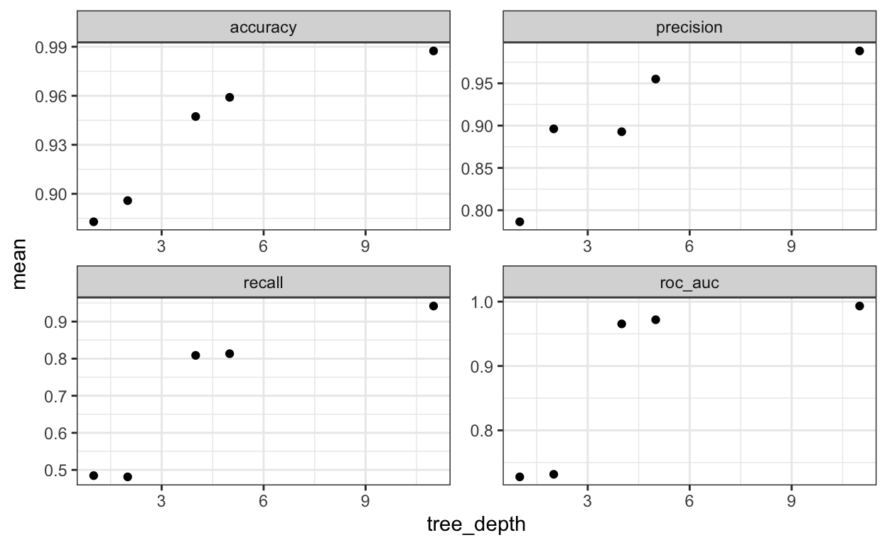
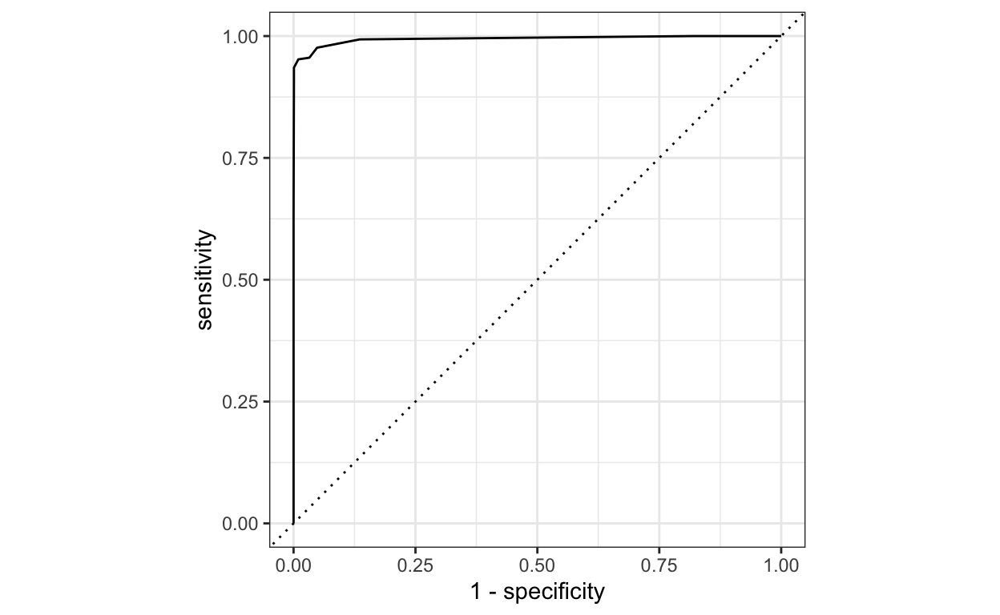

Today we are going to try using decision trees and random forests. We are also going to use a new dataset of wind turbines in Canada which we have imported called turbines_df.
Here is a brief reminder of the step you need to follow for your machine learning process:
You can find more information about the variables [here] (https://github.com/rfordatascience/tidytuesday/blob/master/data/2020/2020-10-27/readme.md).
We will first examine the dataset.
Explore the first 6 lines of the data using the head() function on turbines_df:
head(turbines_df)Look a the number of observations in the dataset using dim():
dim(turbines_df)Look at the structure of the data using the str() function:
str(turbines_df)Now get some summary statistics using the summary()function:
summary(turbines_df)We will use this data to forecast whether a turbine has high capacity or not. We will define 'high-capacity' as a turbine with capacity of more than 2,300 kilowatts (which as you can see is the 3rd quartile of the turbine_capacity variable. This is how we recode the data:
turbines_recoded <- turbines_df %>%
mutate(turbine_capacity = ifelse(turbine_capacity > 2300, "high", "other")) %>%
mutate(turbine_capacity = as.factor(turbine_capacity)) Look at the structure of turbines_recoded using str():
str(turbines_recoded)The first step for our modelling is to split the data between a training and test set using the initial_split() function.
Remember that this is how we split the chocolate dataset, with 80% of the data in the training set, and stratified by the outcome variable high_rating:
chocolate_split <- initial_split(chocolate_clean,
prop = 0.8,
strata = high_rating)
train <- training(chocolate_split)
test <- testing(chocolate_split)Now your turn. Split the turbines_recoded dataframe in the same by modifying the code above. Also make the following changes:
initial_split() in a variable called turbines_split;turbine_capacity.turbines_split <- initial_split(turbines_recoded,
prop = 0.75,
strata = turbine_capacity)
train <- training(turbines_split)
test <- testing(turbines_split)Next, examine the dimensions of our train and test objects:
dim(train)
dim(test)Remember that with chocolate, we told R what variable we were predicting and what features to use with the recipe() function. The code below tells R we want to predict high_rating using all other columns of the chocolate_clean dataframe as features:
chocolate_recipe <- recipe(high_rating ~ ., data = chocolate_clean) Modify the code above to create a "recipe" for predicting turbine_capacity using all other columns of the turbines_recoded dataframe as features. Save the result as turbines_recipe.
turbines_recipe <- recipe(turbine_capacity ~ ., data = turbines_recoded) Print turbines_recipe to examine your model:
turbines_recipe We also want to define what metrics to use to assess our model performance. The code below creates an object that will use only the AUC:
metrics_list <- metric_set(roc_auc)Modify the code above to also include accuracy, precision, and recall:
metrics_list <- metric_set(accuracy, precision, recall, roc_auc)Remember that with our chocolate dataset, we were able to create a logistic regression with the following code:
lasso_model <- logistic_reg() %>%
set_engine("glmnet") %>%
set_mode("classification")The code above does the following:
logistic_reg() function to tell R that it is a logistic regression;set_engine("glmnet") to tell R to use the specific glmnet package;set_mode("classification") to tell R that this is a classification problem (rather than a "regression" problem).Now, your turn. Modify the code above to create a decision tree using the following steps:
dt_model instead of lasso_model;decision_tree() function to tell R that this is a decision tree model;"rpart" instead of "glmnet" to tell R to use the rpart package;dt_model <- decision_tree() %>%
set_engine("rpart") %>%
set_mode("classification")We also want to improve our model by tuning some hyperparameters. Remember that with a logistic regression, we could tell R to tune the hyperparameters penaly and mixture using:
lasso_model <- logistic_reg(penalty = tune(), mixture = tune()) %>%
set_engine("glmnet") %>%
set_mode("classification")Now, modify your own dt_model to tell R to tune 2 hyperparameters:
tree_depth: The maximum depth of the tree;min_n: The minimum number of observation in each branch needed for a split.dt_model <- decision_tree(tree_depth = tune(), min_n = tune()) %>%
set_engine("rpart") %>%
set_mode("classification")Finally, now we have a recipe and a model, we can bring them together in a workflow.
With the chocolate dataset, our workflow for a lasso model looked like this:
lasso_wf <- workflow() %>%
add_model(lasso_model) %>%
add_recipe(chocolate_recipe)Now your turn to create a workflow for your decision tree model, by doing the following:
dt_wf instead of lasso_wf;lasso_model by dt_model;chocolate_recipe by turbines_recipe.dt_wf <- workflow() %>%
add_model(dt_model) %>%
add_recipe(turbines_recipe)Next, we also want to split our training set into several groups in order to perform cross-validation.
Remember that for the chocolate dataset, we used this code:
chocolate_folds <- vfold_cv(train, v = 5,
strata = high_rating)Now, apply this to our training set, making these modifications:
turbines_folds instead of chocolate_folds;turbine_capacity.turbines_folds <- vfold_cv(train, v = 3,
strata = "turbine_capacity")Print out turbines_folds to make sure this worked:
turbines_foldsWe next need to create a grid of values for hyperparameters so that we can run our model over lots of combinations of them, in order to find the best. For example, in the case of our chocolate model, we could tune over penaltyand mixture with this code:
elasticnet_grid <- grid_regular(parameters(penalty(), mixture()), levels = 50)The problem with the code above is that by using grid_regular() it will create 50 x 50 = 250 combinations of hyperparameters to check, which is very time consuming. Instead, we can use grid_random() randomly select 20 combinations to run our model on using this code:
elasticnet_grid <- grid_random(parameters(penalty(), mixture()), size = 20)Now, apply grid_random() to your model, by using tree_depth() and min_n() instead of penalty() and mixture(). Save the grid as dt_grid instead of elasticnet_grid:
dt_grid <- grid_random(parameters(tree_depth(), min_n()), size = 20)Now use head()on dt_print to have a look at your tuning grid:
head(dt_grid)Next, we proceed to tuning the model. Remember with the chocolate dataset, this code did our hyperparameter tuning for us:
lasso_cv_results <- lasso_wf %>%
tune_grid(resamples = chocolate_folds,
grid = lasso_grid,
metrics = metrics_list)Now, run your own hyperparameter tuning by modifying the code above as follows:
dt_cv_results;chocolate_folds by turbines_folds;lasso_grid by dt_grid.dt_cv_results <- dt_wf %>%
tune_grid(resamples = turbines_folds,
grid = dt_grid,
metrics = metrics_list)We can plot the performance of our model for different values of the parameters using the plot_tuning_metrics() function (which is a function I created, not something from an R package). First, we look at performance for different values of tree_depth:
dt_cv_results %>%
plot_tuning_metrics(hyperparameter = "tree_depth", multiple = TRUE) 
Now, use the plot_tuning_metrics() function to plot the performance of the model for different values of min_n:
dt_cv_results %>%
plot_tuning_metrics(hyperparameter = "min_n", multiple = TRUE) We can look at the best models by AUC by using the show_best() function on our dt_cv_results, with the additional argument metric = "roc_auc":
dt_cv_results %>%
show_best(metric = "roc_auc")Next, select the best model using the select_best() function, with metric = "roc_auc" as an additional argument. Save the results as best_dt_model:
best_dt_model <- dt_cv_results %>%
select_best(metric = "roc_auc")Finally, we can apply the best model to the test set, and look at its performance on an entirely new dataset.
Remember that with the chocolate, we ran the following code to finally train our best model on the whole training set, and then test it on the test set:
lasso_final_fit <- lasso_wf %>%
finalize_workflow(best_lasso_model) %>%
last_fit(split = chocolate_split)Now, apply this code to our new problem by doing the following:
dt_final_split;lasso_wf by dt_wf;best_lasso_model by best_dt_model;chocolate_split by turbines_split.dt_final_fit <- dt_wf %>%
finalize_workflow(best_dt_model) %>%
last_fit(split = turbines_split)Next, collect the predictions from dt_final_fit by applying the collect_predictions function. Save the results as dt_predictions:
dt_predictions <- dt_final_fit %>%
collect_predictions()Next, look at your dt_predictions object using head():
dt_predictions %>%
head()In the chocolate dataset, we could build a confusion matrix with the code below, where:
lasso_predictions were the predictions from the lasso model on the test set;high_rating is the true value for the predictor variable;.pred_class is the column which has the prediction from your model (as a binary prediction)conf_mat(lasso_predictions,
truth = high_rating,
estimate = .pred_class)Now build a confusion matrix for your model:
conf_mat(dt_predictions,
truth = turbine_capacity,
estimate = .pred_class)Amend the confusion matrix to make it a heatmap, by adding %>% autoplot(type = "heatmap"):
conf_mat(dt_predictions,
truth = turbine_capacity,
estimate = .pred_class) %>%
autoplot(type = "heatmap")You can also amend it to make it into a mosaic plot by replacing "heatmap" by "mosaic":
conf_mat(dt_predictions,
truth = turbine_capacity,
estimate = .pred_class) %>%
autoplot(type = "mosaic")We can draw a ROC curve by using the code below. Note that the two arguments for roc_curve() are:
turbine_capacity: the true value for the predictor;.pred_high: the predicted value for "high", in probabilitydt_predictions %>%
roc_curve(truth = turbine_capacity, .pred_high) %>%
autoplot()
Finally, calculate the metrics of interest. Below is the example for a lasso model used on our chocolatedataset. Note it has the following elements:
lasso_predictions: the dataframe with the predictions;high_rating: the true value for the predictor variable;.pred_class: the predicted value for the predictor;.pred_high: the prediction, as a probabilitylasso_final_perf <- metrics_list(lasso_predictions,
truth = high_rating,
estimate = .pred_class,
.pred_high)Amend the code above to replace the bits relevant to your current model. Save the results in dt_final_perf instead of lasso_final_perf:
dt_final_perf <- metrics_list(dt_predictions,
truth = turbine_capacity,
estimate = .pred_class,
.pred_high)Print out the results dt_final_perf:
dt_final_perfNow, you can apply all the previous steps again, but this time using a random forest algorithm.
First, split the data between a training and test set, allocating 75% percent of the data to training, and stratifying by turbine_capacity:
turbines_split <- initial_split(turbines_recoded,
prop = 0.75,
strata = turbine_capacity)
train <- training(turbines_split)
test <- testing(turbines_split)Create the 'recipe' by using turbine_capacity as the predictor and all other variables as the features:
turbines_recipe <- recipe(turbine_capacity ~ ., data = turbines_recoded) Create an object to store performance metrics. Use accuracy, precision, recall, roc_auc:
metrics_list <- metric_set(accuracy, precision, recall, roc_auc)Tell R to create a model. Use the code you wrote to create dt_model, but with the following changes:
rf_model instead of dt_model;rand_forest() function instead of logistic_reg() to tell R this is a random forest model;mtry(), trees(), min_n()"ranger" package instead of the "rpart" package;rf_model <- rand_forest(mtry = tune(), trees = tune(), min_n = tune()) %>%
set_engine("ranger") %>%
set_mode("classification")Create a workflow. Call it rf_wf instead of dt_wf:
rf_wf <- workflow() %>%
add_model(rf_model) %>%
add_recipe(turbines_recipe)Create your cross-validation folds. Use 3-fold cross-validation.
turbines_folds <- vfold_cv(train, v = 3,
strata = "turbine_capacity")Create a random grid of size 20 to tune your hyperparameters. Call your new object rf_grid. Also, instead of just writing mtry(), use mtry() %>% range_set(c(4, 12)) (because for some reason this needs to be specified or else it will not work):
rf_grid <- grid_random(
parameters(mtry() %>% range_set(c(4, 12)), trees(), min_n()),
size = 20)Tune your hyperparameters, saving your results as rf_cv_results:
rf_cv_results <- rf_wf %>%
tune_grid(resamples = turbines_folds,
grid = rf_grid,
metrics = metrics_list)Plot the performance for different values of mtry() using the plot_tuning_metrics() function:
rf_cv_results %>%
plot_tuning_metrics(hyperparameter = "mtry", multiple = TRUE) Plot the performance for different values of trees() using the plot_tuning_metrics() function:
rf_cv_results %>%
plot_tuning_metrics(hyperparameter = "trees", multiple = TRUE) Plot the performance for different values of min_n() using the plot_tuning_metrics() function:
rf_cv_results %>%
plot_tuning_metrics(hyperparameter = "min_n", multiple = TRUE) Select the best model using select_best(), using AUC as the performance metric:
best_rf_model <- rf_cv_results %>%
select_best(metric = "roc_auc")Apply your best model to the data. Save the final fit as `rf_final_fit:
rf_final_fit <- rf_wf %>%
finalize_workflow(best_rf_model) %>%
last_fit(split = turbines_split)Collect the predictions and save them as rf_predictions:
rf_predictions <- rf_final_fit %>%
collect_predictions()Create a confusion matrix with a heatmap:
conf_mat(rf_predictions,
truth = turbine_capacity,
estimate = .pred_class) %>%
autoplot(type = "heatmap")Draw a ROC curve:
rf_predictions %>%
roc_curve(truth = turbine_capacity, .pred_high) %>%
autoplot()Collect the list of metrics using metrics_list() and save it as dt_final_perf:
rf_final_perf <- metrics_list(rf_predictions,
truth = turbine_capacity,
estimate = .pred_class,
.pred_high)Print your final performance metrics:
rf_final_perfWhich model has the best performance on this data? Random forest or a decision tree?